Chrono MinerchronominerCMIN · dir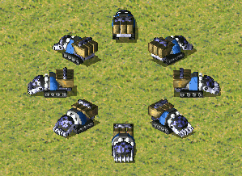in-game image · 299×218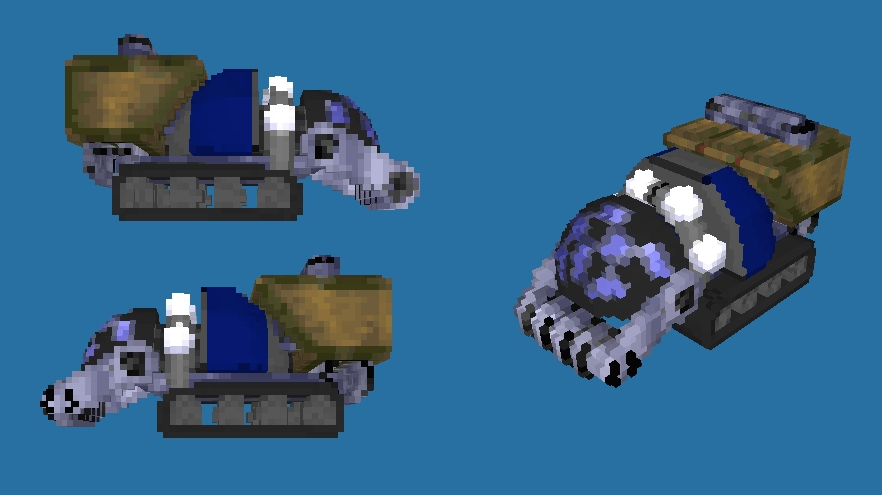voxel render · 882×495CNCRA2 Chrono Miner.png · Chrono Miner Voxel Render.jpg
Guardian GIrocketGGI · dir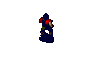sprite animation · 94×78 · 371 framesGuardian GI animation.gifYuri’s Revenge unit; no vanilla RA2 equivalent. Includes deployed missile stance.
Flak TrooperflakFLAKT · col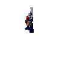sprite animation · 98×94 · 300 framesFlak Trooper animation.gif
RocketeerrocketeerJUMPJET · dir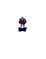sprite animation · 94×120 · 426 framesRocketeer animation.gif
HarrierharrierORCA · dir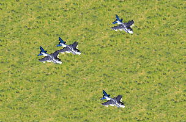in-game image · 304×200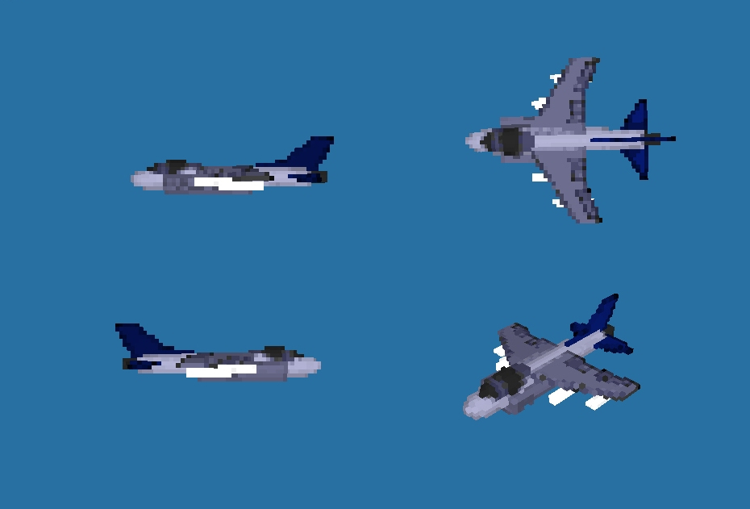voxel render · 930×631RA2 Harriers.png · Harrier Voxel Render.jpg
Kirov AirshipkirovZEP · col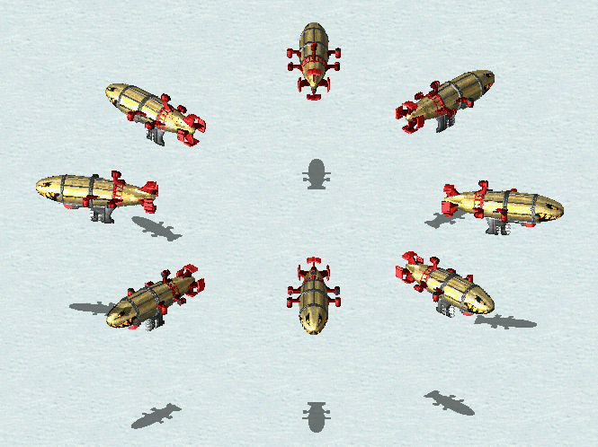in-game image · 665×498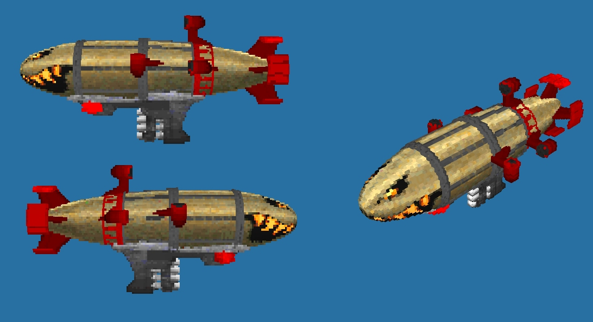voxel render · 1092×593CNCRA2 Kirov Airship.png · Kirov Voxel Render.jpg
Grizzly Battle TanklancerGTNK · dir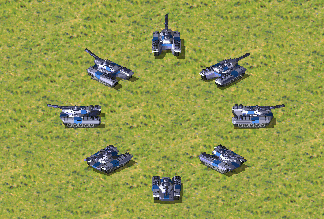in-game image · 324×219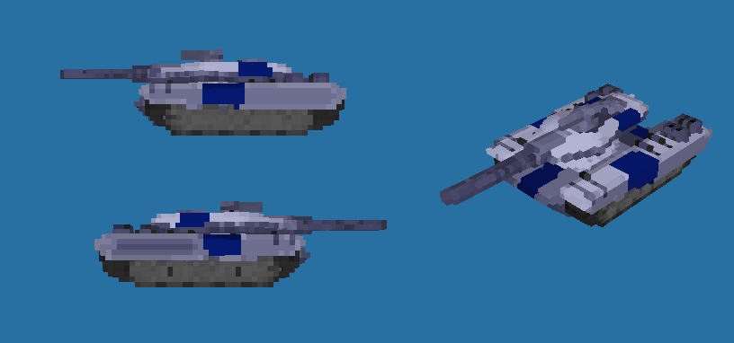voxel render · 816×382CNCRA2 Grizzly Battle Tank.png · Grizzly Battle Tank Voxel Render.jpg
Apocalypse TankmammothMTNK · col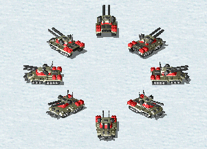in-game image · 301×217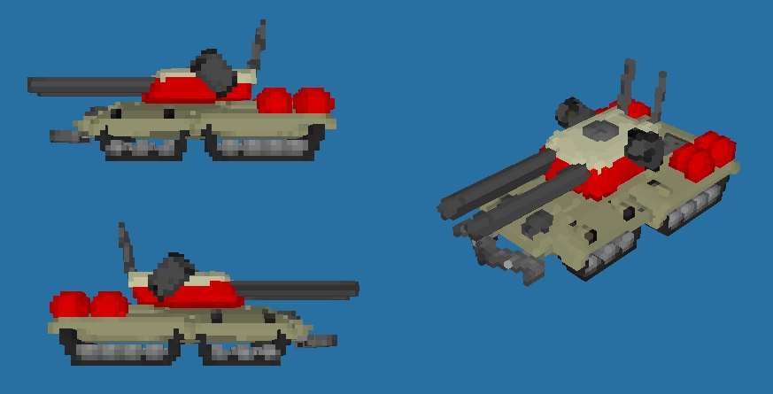voxel render · 873×445RA2 Apocalypse Tank.png · Apocalypse tank Voxel Render.jpg
Allied EngineerengineerENGINEER · dir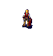sprite animation · 76×80 · 252 framesRA2 Engineer animation.gifBoth factions use the same engineer SHP with owner remap; separate game identities share this source.
Soviet EngineerengineerSENGINEER · colsprite animation · 76×80 · 252 framesRA2 Engineer animation.gifBoth factions use the same engineer SHP with owner remap; separate game identities share this source.
Allied Attack DogdogADOG · dir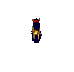sprite animation · 74×72 · 171 frames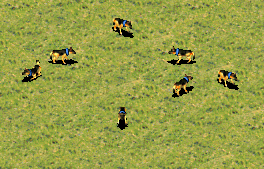in-game image · 264×169Allied Attack Dog animation.gif · CNCRA2 Allied Attack Dog.png
Soviet Attack DogdogDOG · col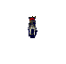sprite animation · 74×72 · 171 frames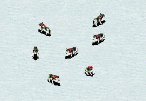in-game image · 243×169Soviet Attack Dog animation.gif · CNCRA2 Soviet Attack Dog.png
Infantry Fighting VehicleifvFV · dir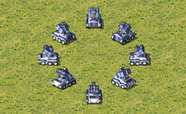in-game image · 368×226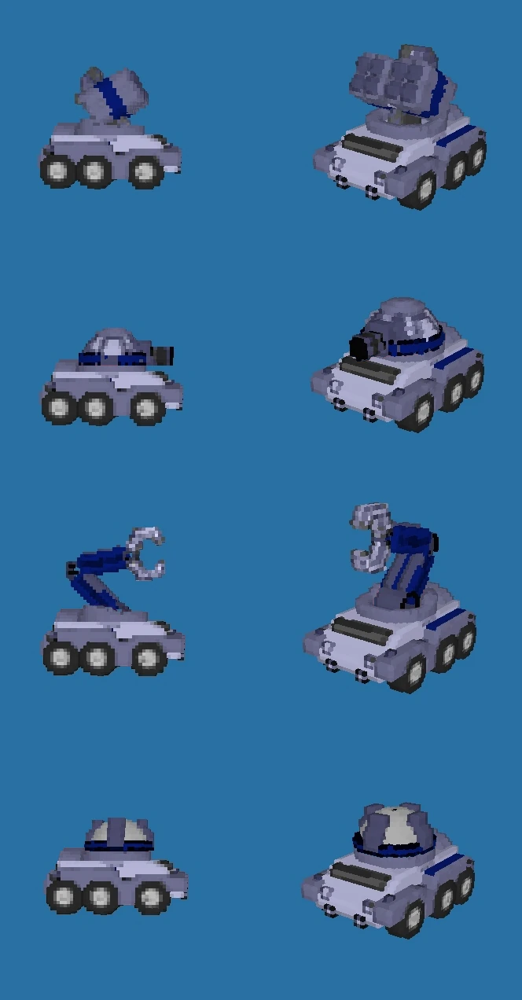voxel render · 664×1272CNCRA2 IFV Default.png · IFV Voxel Render.jpg
Mirage TankmirageMGTK · dir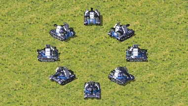in-game image · 381×216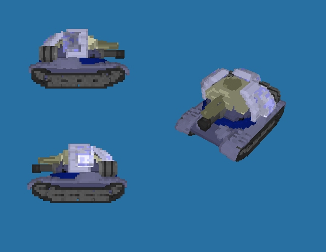voxel render · 644×498CNCRA2 Mirage Tank.png · Mirage tank Voxel Render.jpg
Rhino Heavy TankrhinoHTNK · col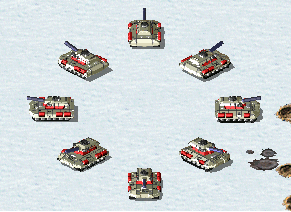in-game image · 291×212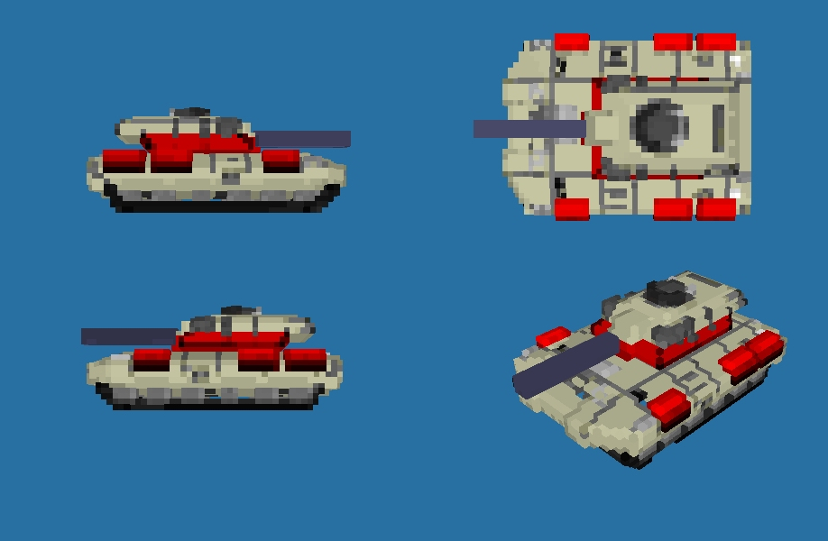voxel render · 918×600RA2 Rhino Tank.png · Rhino Tank Voxel Render.jpg
Flak TrackflaktrackHTK · col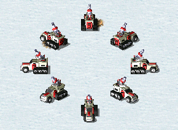in-game image · 290×212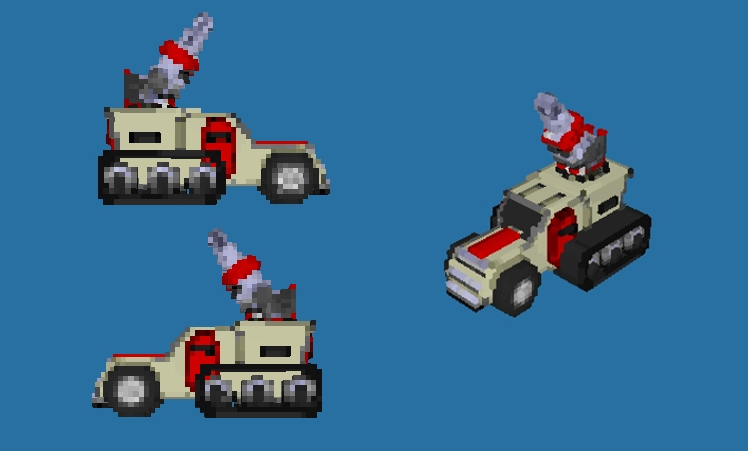voxel render · 748×451RA2 Flak Track.png · Flak track Voxel Render.jpg
Tesla TrooperteslatrooperSHK · col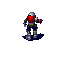sprite animation · 66×76 · 300 framesTesla Trooper animation.gif
Terror DronedroneDRON · col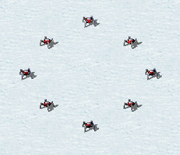in-game image · 258×222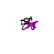sprite animation · 77×77 · 87 framesRA2 Terror Drone.png · Terror Drone animation.gif
Prism TankprismtankSREF · dir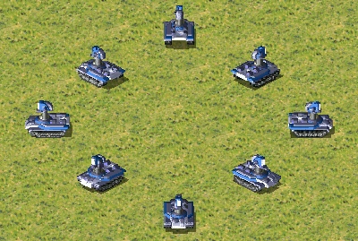in-game image · 400×269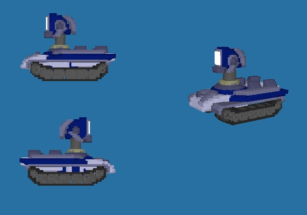voxel render · 628×440CNCRA2 Prism Tank.png · Prism Tank Voxel Render.jpg
DesolatordesolatorDESO · col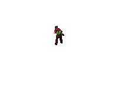sprite animation · 200×150 · 322 framesDesolator animation.gif
Chrono LegionnaireclegCLEG · dir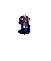sprite animation · 74×88 · 172 framesChrono Legionnaire animation.gif
NightHawk TransportnighthawkSHAD · dir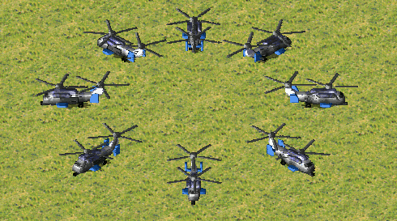in-game image · 490×273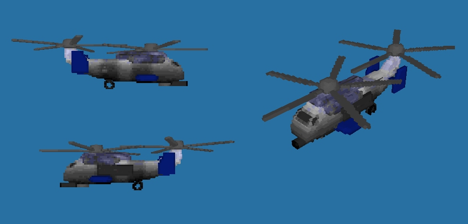voxel render · 930×445CNCRA2 NightHawk Transport.png · NightHawk Voxel Render.jpg
Soviet Amphibious TransportapcSAPC · col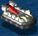in-game image · 76×71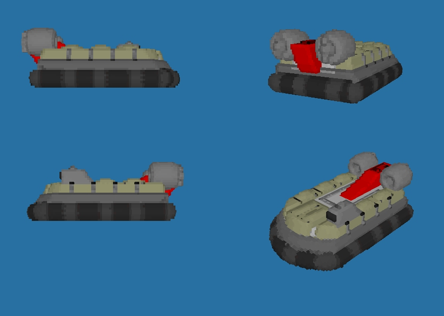voxel render · 896×638Amphibious Transport (Soviet).jpg · Amphibious transport - Soviet Voxel Render.jpg
DestroyerdestroyerDEST · dir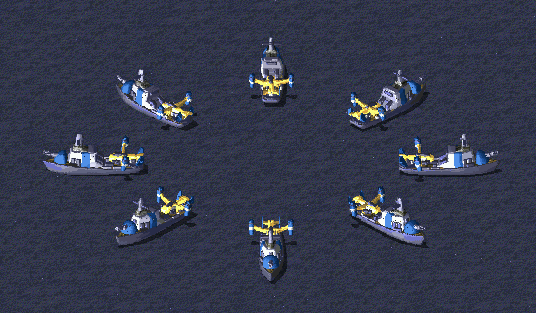in-game image · 536×313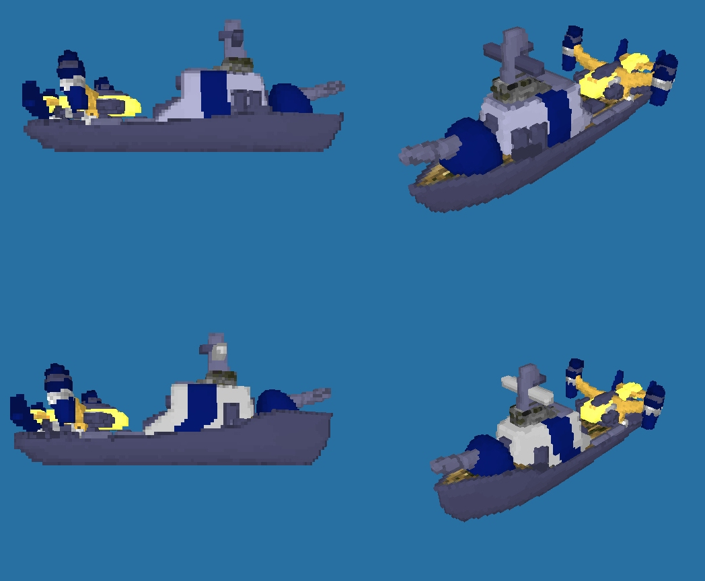voxel render · 1048×864CNCRA2 Destroyer.png · Destroyer Voxel Render.jpg
Aegis CruiseraegisAEGIS · dir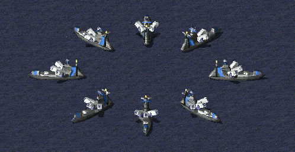in-game image · 498×258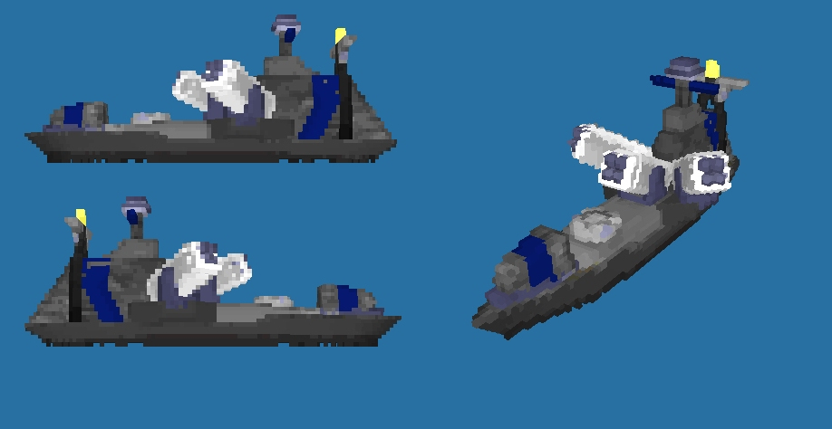voxel render · 918×474CNCRA2 Aegis Cruiser.png · Aegis Voxel Render.jpg
Aircraft CarriercarrierCARRIER · dirin-game image · 654×376voxel render · 1040×556CNCRA2 Aircraft Carrier.png · Aircraft Carrier Voxel Render.jpg
HornethornetHORNET · dirin-game image · 503×187voxel render · 652×433Hornet.jpg · Hornet Voxel Render.jpg
Allied Amphibious TransportlcraftLCRF · dirin-game image · 72×64voxel render · 1038×801Amphibious Transport (Allied).jpg · Amphibious transport - Allied Voxel Render.jpg
Typhoon Attack SubsubSUB · colin-game image · 518×298voxel render · 872×551CNCRA2 Typhoon Attack Sub.png · Typhoon Voxel Render.jpg
Sea ScorpionseascorpHYD · colin-game image · 360×199voxel render · 686×401CNCRA2 Sea Scorpion.png · Sea scorpion Voxel Render.jpg
DreadnoughtdreadDRED · colin-game image · 596×316voxel render · 1140×542CNCRA2 Dreadnought.png · Dreadnought Voxel Render.jpg
Allied Mobile Construction VehiclemcvAMCV · dirin-game image · 304×225voxel render · 734×402deployment animation · 284×226 · 28 framesCNCRA2 Allied MCV.png · Allied MCV Voxel Render.jpg · Allied MCV animation.gif
Soviet Mobile Construction VehiclemcvSMCV · colin-game image · 304×225deployment animation · 286×224 · 30 framesCNCRA2 Soviet MCV.png · Soviet MCV animation.gif
Allied Construction YardbaseGACNST · dirsprite animation · 284×226 · 29 framesAllied Construction Yard animation 1.gif
Soviet Construction YardbaseNACNST · colsprite animation · 338×224 · 25 framesSoviet Construction Yard animation 2.gif
Soviet Ore RefineryrefineryNAREFN · colsprite animation · 210×184 · 25 framesSoviet Ore refinery animation.gif
Allied BarracksbarracksGAPILE · dirsprite animation · 250×148 · 24 framesAllied Barrack animation 1.gif
Soviet BarracksbarracksNAHAND · colsprite animation · 254×230 · 24 framesSoviet Barracks animation 2.gif
Soviet War FactoryfactoryNAWEAP · colsprite animation · 282×224 · 24 framesSoviet War Factory animation.gif
Allied Naval ShipyardshipyardGAYARD · dirsprite animation · 432×304 · 24 framesAllied Naval shipyard animation.gif
Soviet Naval ShipyardshipyardNAYARD · colsprite animation · 400×246 · 24 framesSoviet Naval shipyard animation.gif
Allied Service DepotdepotGADEPT · dirsprite animation · 190×150 · 24 framesAllied Service depot animation.gif
Airforce Command HeadquartersairforceGAAIRC · dirsprite animation · 188×162 · 24 framesAirforce Command Headquarter animation.gif
Nuclear ReactorreactorNANRCT · colsprite animation · 276×188 · 21 framesNuclear reactor animation 2.gif
Prism TowerprismATESLA (art: GAPRIS) · dirsprite animation · 272×256 · 20 framesPrism tower animation 1.gif
Allied Fortress WallwallGAWALL · dirsprite animation · 78×70 · 47 framesAllied Fortress Walls animation.gif
Soviet Fortress WallwallNAWALL · colsprite animation · 80×64 · 47 framesSoviet Fortress Walls animation.gif
Patriot Missile SystempatriotNASAM · dirsprite animation · 98×68 · 7 framesPatriot missile system animation.gif
Weather Control DeviceweatherGAWEAT · dirsprite animation · 154×154 · 24 framesWeather Control Device animation 1.gif
Nuclear Missile SilonukeNAMISL · colsprite animation · 238×202 · 31 framesNuclear missile silo animation 1.gif
SpySat UplinkspysatGASPYSAT · dirsprite animation · 186×102 · 24 framesSpy Satellite Uplink animation.gif
Psychic SensorpsisensorNAPSIS · colsprite animation · 264×208 · 79 framesPsychic Sensor animation 1.gif
Cloning VatscloningvatsNACLON · colsprite animation · 214×174 · 24 framesSoviet Cloning vat animation 2.gif
Allied GategateGAGATE_A · diroriginal RA2 mission panorama · 2910×1800RA2A01.jpgThe surviving vanilla RA2 mission gate. See the striped road gate at the Allied base entrance.
Soviet GategateGAGATE_A (shared reference) · coloriginal RA2 mission panorama · 2910×1800RA2A01.jpgVanilla RA2 contains no completed Soviet gate art; the Soviet variant in this game is an adaptation of the one Allied mission gate.
Apartment BlockcivflatCACITY01 · neutralYuri’s Revenge map render · 4980×2925Manhattan Mayhem.jpgRepresentative intact tall New York apartment block in the original map render.
WarehousecivwareCITY09 / CACHIG05 · neutralYuri’s Revenge map render · 4980×2925Manhattan Mayhem.jpgRepresentative low industrial warehouse; RA2 has several regional warehouse SHPs.
Corner ShopcivshopCITY10 · neutralYuri’s Revenge map render · 4980×2925Manhattan Mayhem.jpgRepresentative small urban storefront at native battle scale.
Filling StationcivfuelCAGAS01 · neutralYuri’s Revenge map render · 4980×2925Manhattan Mayhem.jpgThe original RA2 gas-station family in city context.
Office BlockcivofficeCITY03 / CANEWY06 · neutraloriginal RA2 mission panorama · 2910×1800RA2A01.jpgRepresentative New York office towers, including damaged states.
Shop RowcivrowCACITY04 / CITY10 · neutralYuri’s Revenge map render · 4980×2925Manhattan Mayhem.jpgThe game role combines RA2 storefront and small city-block SHPs.
Ruined BlockcivruinCACITY01D family · neutraloriginal RA2 mission panorama · 2910×1800RA2A01.jpgOriginal damaged and burning city-building states are visible throughout this mission panorama.
Grain DepotcivsiloCAFARM02 / CATS01 · neutraloriginal RA2 mission panorama · 6150×2220RA2A02.jpgOriginal farm-storage and twin-silo structures in the snow village.
FarmhousecivfarmCAFRMA / CAFARM01 · neutraloriginal RA2 mission panorama · 6150×2220RA2A02.jpgOriginal farmhouse family in the snow village.
BarncivbarnCABARN02 / CATS01 · neutraloriginal RA2 mission panorama · 6150×2220RA2A02.jpgOriginal barn and agricultural outbuilding family in the snow village.
Bridge Repair HutbhutCABHUT · neutraloriginal RA2 mission panorama · 2910×1800RA2A01.jpgThe bridge-control hut is shown beside the repaired bridge in the original mission panorama.